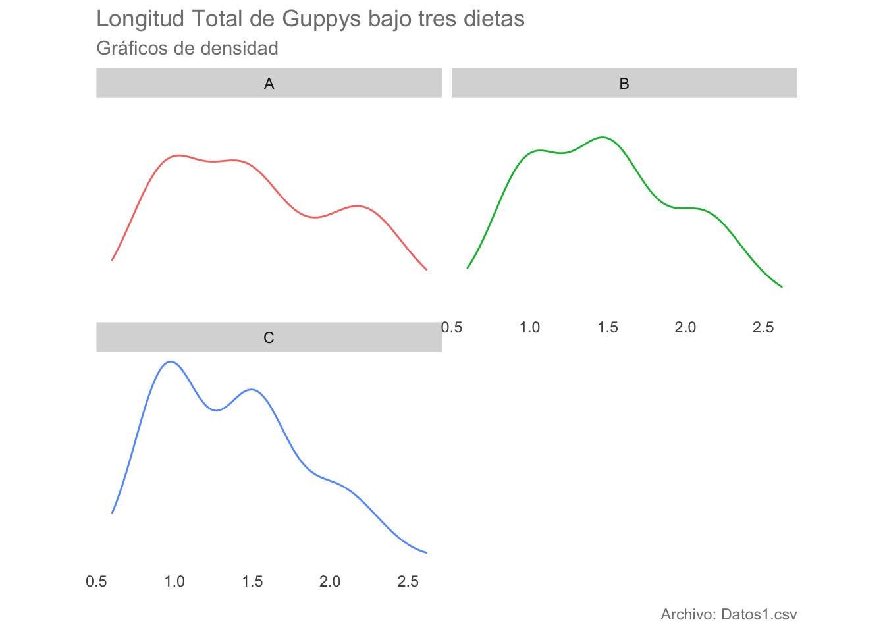
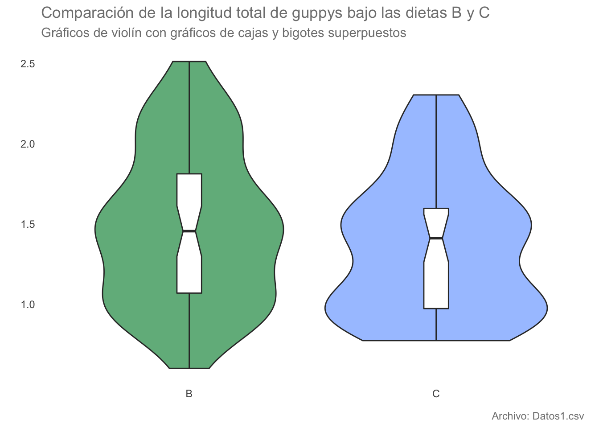
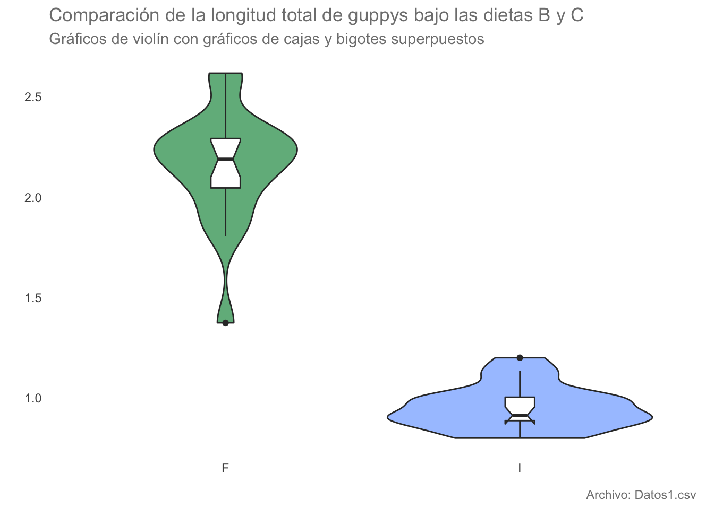
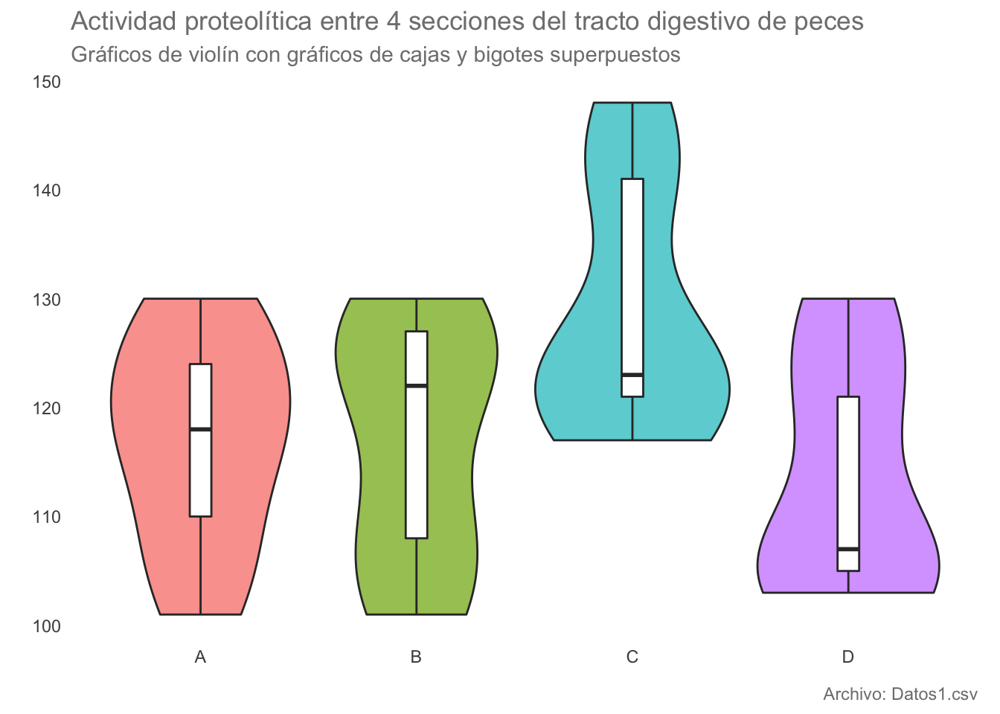
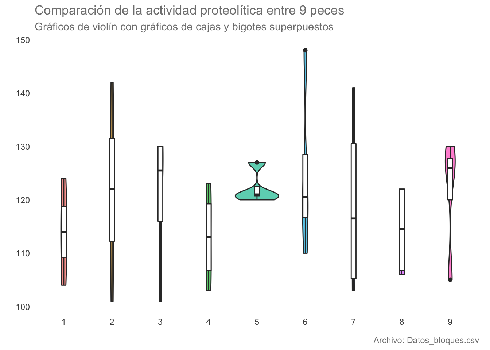
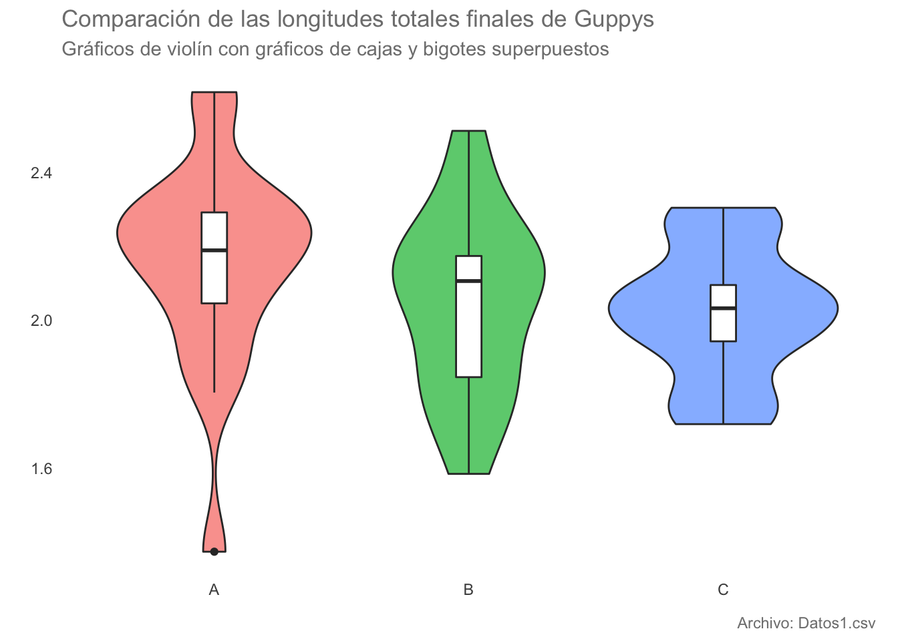

VIDEO
Librerías y funciones personalizadas:
library(ggplot2)
library(moments)
# Tema personalizado
blank_theme <- function(){
theme(panel.grid.minor = element_blank(),
panel.grid.major = element_blank(),
panel.background = element_blank(),
axis.line = element_blank(),
aspect.ratio = 1/1.61,
axis.ticks = element_blank(),
text = element_text(colour = "gray50"), # Eliminar
legend.position = "none"
)
}
Introducción
Hasta ahora habíamos tratado con pruebas y técnicas que requieren ciertas características, particularmente normalidad y homocedasticidad, para dar resultados confiables. Pero, ¿qué pasa cuando nuestros datos no se ajustan a una distribución normal o tenemos muestras heterocedásticas? Una opción es recurrir a algún método de transformación de datos, pero eso lo abordaremos en otra ocasión. Hoy hablaremos sobre una familia de técnicas cuyos requerimientos sobre las distribuciones de los datos no son tan estrictos: Las pruebas NO paramétricas o Libres de Distribución. Para explicar en qué consisten y cuales son sus diferencias me gustaría hacerlo en forma de una sere de preguntas y respuestas:
¿Por qué se llaman no paramétricas? Estas técnicas reciben esos nombres debido a que no están basadas en los Parámetros de una Población (\(\mu\) o \(\sigma^2\)) y que en consecuencia no requieren que los conozcamos o estimemos.
¿Por qué no aplicarlas siempre? Una deducción rápida puede ser que, si estas pruebas no requieren de características especiales de nuestros datos, podemos utilizarlas siempre y dejar de lado las pruebas paramétricas. Esto se debe a que en general, las técnicas paramétricas son más precisas y tienen un mayor poder estadístico; es decir, que son mejores para encontrar un efecto realmente significativo (son más sensibles).
¿En qué casos aplicarlas?
Cuando sepamos que los datos poblacionales no siguen una distribución normal. Esta parte tiene sus bemoles porque el cubrir este único requisito dependerá de le exhaustividad de nuestro muestreo y si es realmente representativo de lo que sucede a un nivel poblacional. Dejando el tecnicismo de lado, recurriremos a estas técnicas en el mismo escenario en el que aplicaríamos alguna transformación a los datos: cuando tengamos evidencia lo suficientemente grande de que nuestros datos (muestras) no se ajustan a una distribución normal. Como ya habíamos comentado antes debemos sustentar nuestras conclusiones a partir de diversas evidencias y no solo un valor de p. Un análisis gráfico de la distribución de frecuencias (gráfico QQ, KDE o un gráfico de frecuencias), acompañado de una prueba de normalidad (e.g. Shapiro-Wilks) deberían ser lo mínimo realizable para evaluar la normalidad de nuestros datos. Adicionalmente podemos estimar la curtosis (altura de la curva) y el sesgo (simetría de la distribución) y ver qué tan diferentes son de el valor de 1 de una distribución normal.
Otros casos a tener en cuenta son:
las escalas de nuestros datos, ya que variables en escala nominal u ordinal deberán ser analizadas utilizando pruebas no paramétricas
El tamaño de muestra es muy pequeño para realizar una prueba paramétrica. ¿Qué tan pequeño? menos de 10-15 datos por muestra. Ën este punto es importante mencionar que con un n<5 no es posible identificar desviaciones de una distribución normal.
El objetivo es realizar inferencias alrededor de la mediana y no de la media (útil con distribuciones muy sesgadas).
- ¿Qué pasa si, aún violando los supuestos, empleo una prueba paramétrica? En general la consecuencia será el mismo: no podrás confiar en los resultados. Para ejemplificarlo tomemos al Análisis de la Varianza (ANOVA) paramétrico. Recordemos que en este análisis comparamos la Varianza dentro de los grupos contra la Varianza entre los grupos, por lo que si uno o más grupos presentan desviaciones muy importantes de la normalidad el resultado será un análisis sesgado, causado por las diferencias en la distribución global de frecuencias. Adicionalmente, si las muestras no son homocedásticas, el resultado será que la varianza dentro de uno o más grupoos será mayor y, en consecuencia, la razón de las mismas tenderá a ser más pequeña y el resultado será un mayor nivel de significancia (valor de p).
Habiendo tocado esos puntos, exploremos las alternativas no paramétricas a algunas de las pruebas que hemos visto en el curso.
En esta sesión utilizaremos los archivos Datos1.csv, Datos_bloques.csv y Abundancias.csv, por lo que primero tendremos que cargarlos:
# Carga de datos
df <- read.csv("data/Datos1.csv", header = F, skip = 1, sep = ",")
colnames(df) <- c("Dieta", "Periodo", "Rep", "LT", "PT")
head(df)
bloques <- read.csv("data/Datos_bloques.csv")
head(bloques)
abundancias <- read.csv("data/Abundancias.csv")
abundancias
Comencemos entonces a explorar algunas de las distintas herramientas que tenemos a nuestra disposición:
Comparación de muestras independientes: U de Mann-Whitney
También llamada prueba de Mann-Whitney-Wilcoxon o prueba de suma de rangos de Wilcoxon. Esta prueba es la alternativa a la prueba T de Student para muestras independientes, en donde la comparación se realiza en términos de las medianas (\(\tilde{x}\)) y por tanto la hipótesis nula será \(H_0: \tilde{X}_1 = \tilde{X}_2\).
Antes de pasar al modo de calcular el estadístico de prueba, hablemos sobre las consideraciones que debemos de tener para aplicar esta prueba:
- La variable dependiente deberá de estar en escala ordinal o continua
- La variable independiente será una variable categórica con dos grupos
- Las muestras deberán ser independientes; es decir, no deberá de existir una relación entre o dentro de los grupos (medidas repetidas)
- Aunque los datos no se ajusten a una distribución normal, deberán de tener la misma forma (ambos con forma de campana y sesgo negativo, o ambos con sesgo positivo, etc.)
El estadístico de prueba es el estadístico U, el cual será el valor mínimo de alguno de los siguientes cálculos, donde R es la suma de rangos. El rango de cada dato se obtiene ordenando todos los datos de mayor a menor, teniendo cuidado de no perder a qué grupo pertenece cada uno de ellos, y numerarlos de 1 hasta el número de datos.
Para aplicarla en R utilizaremos la función wilcox.test(formula), pero primero exploremos nuestros datos. Nuestra variable de interés es la variable LT, por lo que realizaremos la evaluación de la normalidad, tanto de manera cuantitativa (prueba de Shapiro-Wilks, sesgo y curtosis), como de manera gráfica (Gráficos de densidad). Generemos una función que nos permita reunir estos datos en una sola tabla de manera rápida:
norms <- data.frame(Dieta = NA, w = NA, p = NA, k = NA, s = NA)
grupos <- unique(df$Dieta)
for (i in 1:length(grupos)) {
st <- shapiro.test(df$LT[df$Dieta == grupos[i]])
norms[i,] <- c(as.character(grupos[i]),
round(st[["statistic"]], 2),
round(st[["p.value"]], 3),
round(kurtosis(df$LT[df$Dieta == grupos[i]]), 2),
round(skewness(df$LT[df$Dieta == grupos[i]]),2)
)
}
norms
kdeplots <- ggplot(data = df, aes(LT, color = Dieta)) +
geom_density() +
facet_wrap(~Dieta, nrow = 2) +
blank_theme() +
labs(title = "Longitud Total de Guppys bajo tres dietas",
subtitle = "Gráficos de densidad",
caption = "Archivo: Datos1.csv",
x = element_blank(),
y = element_blank()) +
scale_y_continuous(breaks = NULL)
kdeplots
## Warning: Removed 22 rows containing non-finite values (stat_density).

Debido a que todas las distribuciones fueron leptocúrticas (k > 1) y con sesgo negativo (s < 1), todas las pruebas de normalidad tuvieron niveles de significancia pequeños y los gráficos KDE mostraron tendencias hacia la bimodalidad, concluimos que los datos no se ajustan a una distribución normal; en consecuencia, se justifica realizar pruebas no paramétricas. OJO: esto era de esperarse debido a que hay una variable más de agrupamiento: el periodo; es decir, que hay información del inicio del experimento un periodo intermedio y un periodo final, solo se realiza este ejemplo con fines de enseñanza.
Imaginemos que nos interesa conocer si los organismos alimentados con la dieta B tuvieron una longitud total diferente a los alimentados con la dieta C, entonces apliquemos una prueba U-Mann-Whitney.
u.data <- subset(df, Dieta != "A")
wilcox.test(LT~Dieta, data = u.data)
##
## Wilcoxon rank sum test with continuity correction
##
## data: LT by Dieta
## W = 1408, p-value = 0.223
## alternative hypothesis: true location shift is not equal to 0
Este resultado corresponde bastante bien con lo visto en los gráficos de densidad en el sentido de falta de diferencias, aunque podemos representarlo utilizando un gráfico de violín que es más adecuado para propósitos de comparación:
u.mann.plot <- ggplot(data = u.data, aes(x = Dieta, y = LT, fill = Dieta)) +
geom_violin(trim = T, alpha = 0.7) +
geom_boxplot(width = 0.1, fill = "white", notch = T) +
blank_theme() +
labs(title = "Comparación de la longitud total de guppys bajo las dietas B y C",
subtitle = "Gráficos de violín con gráficos de cajas y bigotes superpuestos",
caption = "Archivo: Datos1.csv",
x = element_blank(),
y = element_blank()
) +
scale_fill_manual(values = c(rgb(29,149,79, maxColorValue = 255),
rgb(126,172,255, maxColorValue = 255))
)
u.mann.plot
## Warning: Removed 20 rows containing non-finite values (stat_ydensity).
## Warning: Removed 20 rows containing non-finite values (stat_boxplot).

Comparación de dos muestras dependientes (pareadas): Prueba por rangos de Wilcoxon
Otra pregunta que podemos estar interesados en responder con esta base de datos es si las Longitudes Totales al inicio del experimento fueron iguales o diferentes al final del experimento en la dieta A y asumamos, para fines de enseñanza, a) que los datos a este nivel no siguen una distribución normal y b) que tenemos mediciones pareadas; es decir, que la medición 1 del periodo inicial corresponde al mismo individuo que la medición 1 del periodo final. Bajo estos supuestos, realizaremos la prueba de rangos de Wilcoxon.
Esta prueba es la alternativa no paramétrica a la prueba t para datos pareados y, al igual que en el caso de la prueba U de Mann-Whitney, compara si las medianas entre ambos grupos son diferentes entre sí. Por otra parte, y del mismo modo que la prueba t para datos pareados, el cálculo se realiza a partir de las diferencias entre ambos grupos, asignándoles un rango y luego sumarlas según su signo, tal que:
- \(W^+ = \sum R^+\)
- \(W^- = \sum R^-\)
Donde R es el rango de cada diferencia y \(+\) y \(-\) representan su signo. El valor que utilizaremos durante la prueba será el más pequeño de los dos. La prueba de hipótesis se realiza utilizando la distribución normal, tal que:
- \(Z = \frac{min(W) - \mu}{\sigma - r}\)
Donde: \(\mu = \frac{n(n+1)}{4}\), \(\sigma = \frac{\sqrt{n(n+1)(2n+1)}}{24}\) y r es un factor de reducción cuando existen t rangos empatados: \(r = \frac{t^3-t}{48}\).
En r, por fortuna, la implementación es mucho más sencilla, solo hay que considerar que al ser una prueba pareada, el número de datos en ambos grupos debe ser igual.
wilcox.data <- subset(df, (Dieta == "A" & Periodo != "M")) # Extraemos solo los datos que nos interesan
aggregate(LT~Periodo, data = wilcox.data, length) # Vemos que al final tenemos un individuo menos que al inicio, por lo que hay que retirarlo de la base de datos (asumamos que es el último)
wilcox.data <- wilcox.data[-c(20),]
aggregate(LT~Periodo, data = wilcox.data, length) #Ahora tenemos ns iguales, por lo que podemos aplicar la prueba pareada
Ahora apliquemos la prueba.
wilcox.test(LT~Periodo, data = wilcox.data, paired = T)
##
## Wilcoxon signed rank exact test
##
## data: LT by Periodo
## V = 190, p-value = 3.815e-06
## alternative hypothesis: true location shift is not equal to 0
Vemos que al parecer las medianas son diferentes, lo cual se sostiene al analizar los resultados de manera gráfica:
w.rank.plot <- ggplot(data = wilcox.data, aes(x = Periodo, y = LT, fill = Periodo)) +
geom_violin(trim = T, alpha = 0.7) +
geom_boxplot(width = 0.1, fill = "white", notch = T) +
blank_theme() +
labs(title = "Comparación de la longitud total de guppys bajo las dietas B y C",
subtitle = "Gráficos de violín con gráficos de cajas y bigotes superpuestos",
caption = "Archivo: Datos1.csv",
x = element_blank(),
y = element_blank()
) +
scale_fill_manual(values = c(rgb(29,149,79, maxColorValue = 255),
rgb(126,172,255, maxColorValue = 255))
)
w.rank.plot
## Warning: Removed 1 rows containing non-finite values (stat_ydensity).
## Warning: Removed 1 rows containing non-finite values (stat_boxplot).
## notch went outside hinges. Try setting notch=FALSE.

Prueba por Rangos de Friedman y coeficiente de acuerdo de Kendall
Antes de hablar de las siguientes dos técnicas, hablemos sobre los bloques aleatorizados completos. Este caso se da cuando contamos con un factor adicional a nuestros factores de interés. En este caso realizaremos bloques para poder reducir el error experimental derivado de dichos factores. Un ejemplo es tener una serie de votantes para evaluar una serie de aspectos, o evaluar la actividad proteolítica en distintas secciones del tracto digestivo de distintos peces, o diferentes mediciones de fósforo de distintas muestras realizadas por distintas personas.
En este sentido, la Prueba por Rangos de Friedman nos permite analizar a la vez las diferencias entre grupos, según los bloques. Para ello asignaremos rangos a las observaciones de cada bloque y compararemos el promedio de los rangos de cada grupo con respecto a la media y la varianza de los rangos de manera global. Pausa el video un momento, analiza la ecuación de \(F_R\) y trata de adivinar qué tipo de distribución sigue \(F_R\). Una pista: esa distribución ya fue vista durante el curso. La respuesta es una distribución \(\chi^2\).
Ok, una vez que realizamos esos cálculos ya evaluamos las diferencias entre los grupos tomando en consideración a los bloques, pero ¿qué tan similares son estos bloques? o en otras palabras, ¿qué tan de acuerdo estuvieron los votantes?. Para ello podemos utilizar el Coeficiente de acuerdo de Kendall (W), el cuál está en términos del error cuadrático de la asignación de rangos dentro de cada bloque y el número de bloques y grupos. W indica la magnitud del acuerdo, donde 0 representa total desacuerdo y 1 total acuerdo. Existen algunas otras alternativas que valdría la pena que buscaras y analizaras, como estas de aquí.
Ahora vayamos a R y apliquemos estas técnicas a nuestros datos por bloques. Para ello necesitaremos cambiar el formato de la base de datos de una base de datos tabular a una base de datos codificada utilizando la función melt(data, id.vars, variable.name, value.name)
bloques.molten <- reshape2::melt(bloques, id.vars = "Pez", variable.name = "Secc", value.name = "Act")
bloques.molten
Ahora podemos aplicar la prueba de Friedman utilizando la función friedman.test(a ~ b|c), donde a representa la variable de medición, b los grupos y c los bloques.
friedman.test(Act~Secc|Pez, data = bloques.molten)
##
## Friedman rank sum test
##
## data: Act and Secc and Pez
## Friedman chi-squared = 4.7586, df = 3, p-value = 0.1903
Realicemos la comparación gráficamente:
fried.plot <- ggplot(data = bloques.molten, aes(x = Secc, y = Act, fill = Secc)) +
geom_violin(trim = T, alpha = 0.7) +
geom_boxplot(width = 0.1, fill = "white", notch = F) +
blank_theme() +
labs(title = "Actividad proteolítica entre 4 secciones del tracto digestivo de peces",
subtitle = "Gráficos de violín con gráficos de cajas y bigotes superpuestos",
caption = "Archivo: Datos1.csv",
x = element_blank(),
y = element_blank()
)
fried.plot

De estos resultados podríamos concluir que no hubo diferencias entre la actividad proteolítica entre las distintas secciones de los tractos digestivos, pero ¿qué tan diferentes entre sí fueron los peces? Utilicemos el coeficiente de acuerdo de Kendall utilizando la función KendallW(x, correct, test, na.rm) de la librería DescTools donde x representa una matriz de k grupos (columnas) y m bloques (renglones), correct es un argumento booleano si se debe de realizar la corrección por empates en los rangos y test para realizar una prueba \(\chi^2\) con \(H_0: W = 0\); es decir, si hubo o no un desacuerdo total entre los bloques. A partir de los resultados vemos que hubo alrededor de un 18% de similitudes entre la actividad proteolítica de los peces, por lo cual los resultados de la prueba de Friedman no son confiables.
#if(!require(DescTools)) install.packages("DescTools", dependencies = T)
library(DescTools)
KendallW(bloques, correct = T, test = T) #Esta función sí requiere los datos en forma tabular, por lo que x será nuestra variable bloques
##
## Kendall's coefficient of concordance Wt
##
## data: bloques
## Kendall chi-squared = 7.5578, df = 8, subjects = 9, raters = 5, p-value
## = 0.4778
## alternative hypothesis: Wt is greater 0
## sample estimates:
## Wt
## 0.1889447
Y comprobémoslo gráficamente (ojo, para graficar estamos utilizando la base codificada)
kendall.plot <- ggplot(data = bloques.molten,
aes(x = as.factor(Pez), y = Act, fill = as.factor(Pez))) + # OJO: Estamos transformando la columna Pez a un factor (son números)
geom_violin(trim = T, alpha = 0.7) +
geom_boxplot(width = 0.1, fill = "white", notch = F) +
blank_theme() +
labs(title = "Comparación de la actividad proteolítica entre 9 peces",
subtitle = "Gráficos de violín con gráficos de cajas y bigotes superpuestos",
caption = "Archivo: Datos_bloques.csv",
x = element_blank(),
y = element_blank()
)
kendall.plot

ANOVA no paramétrico: Kruskall-Wallis:
Esta vez nos presentan la pregunta: ¿hubo diferencias entre las longitudes finales de los guppys, según la dieta con la que fueron alimentados?
Para responder a esta pregunta podríamos utilizar un Análisis de la Varianza de una vía; sin embargo, recordemos que estamos asumiendo que se viola el supuesto de normalidad de los datos a ese nivel y, por tanto, habrá que realizar una prueba no paramétrica: ANOVA de Kruskal-Wallis. Esta prueba es una extensión de la prueba U de Mann-Whitney a más grupos, por lo tanto también trabajará con la suma de rangos de los datos y el procedimiento es muy similar:
- Asignar rangos a los datos unidos (sin perder el grupo)
- Realizar la suma de rangos de cada grupo y compararlas
Al igual que en otras pruebas que hemos visto el día de hoy, la distribución de prueba es la distribución \(\chi^2\) con k-1 grados de libertad.
Una vez que realizamos la prueba solo obtendremos si hubo diferencias en alguna de las medianas, pero no sabremos cuál o cuáles fueron diferentes; por lo tanto, habrá que realizar una prueba post-hoc: la prueba de comparaciones múltiples de Dunn, dada por:
La implementación de ambas pruebas en R es sumamente sencilla. Primero, el ANOVA Kruskal-Wallis utilizando la función kruskal.test(formula, data):
H <- kruskal.test(LT~Dieta, data = subset(df, Periodo == "F"))
H
##
## Kruskal-Wallis rank sum test
##
## data: LT by Dieta
## Kruskal-Wallis chi-squared = 3.975, df = 2, p-value = 0.137
Vemos que aparentemente no hay diferencias entre las medias; sin embargo, realicemos la prueba de Dunn para confirmar. Para ello utilizaremos la función DunnTest(formula, data) de la librería DescTools. Vemos que en efecto, pareciera no haber diferencias entre las longitudes finales de los guppys en función de las dieta con la que fueron alimentados.
DescTools::DunnTest(LT~factor(Dieta), data = subset(df, Periodo == "F"))
##
## Dunn's test of multiple comparisons using rank sums : holm
##
## mean.rank.diff pval
## B-A -7.105263 0.2578
## C-A -9.327485 0.2578
## C-B -2.222222 0.6851
## ---
## Signif. codes: 0 '***' 0.001 '**' 0.01 '*' 0.05 '.' 0.1 ' ' 1
Corroboremos esto de manera gráfica:
kruskal.plot <- ggplot(data = subset(df, Periodo == "F"),
aes(x = Dieta, y = LT, fill = Dieta)) +
geom_violin(trim = T, alpha = 0.7) +
geom_boxplot(width = 0.1, fill = "white", notch = F) +
blank_theme() +
labs(title = "Comparación de las longitudes totales finales de Guppys",
subtitle = "Gráficos de violín con gráficos de cajas y bigotes superpuestos",
caption = "Archivo: Datos1.csv",
x = element_blank(),
y = element_blank()
)
kruskal.plot
## Warning: Removed 14 rows containing non-finite values (stat_ydensity).
## Warning: Removed 14 rows containing non-finite values (stat_boxplot).

Con esto llegamos al final de esta clase. Espero que haya sido de tu agrado y nos vemos en la siguiente.
